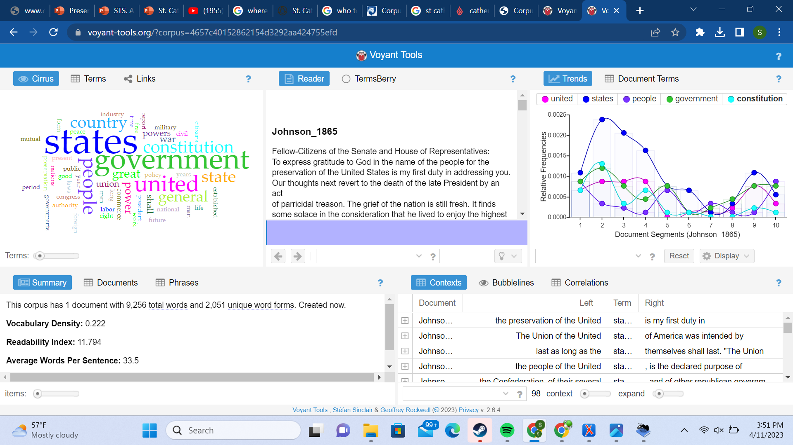
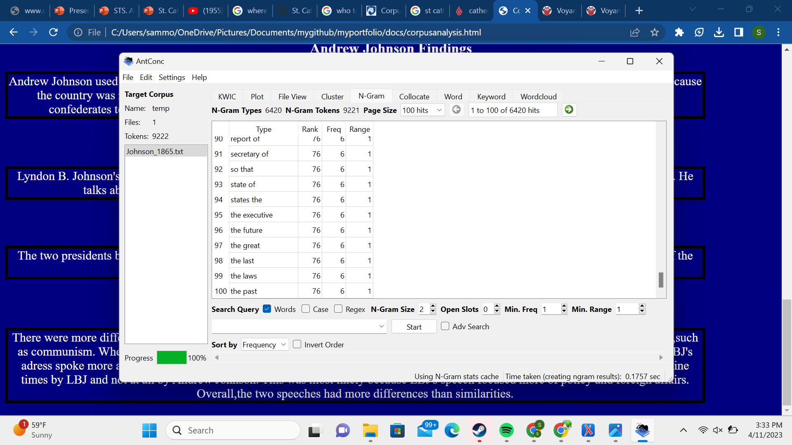
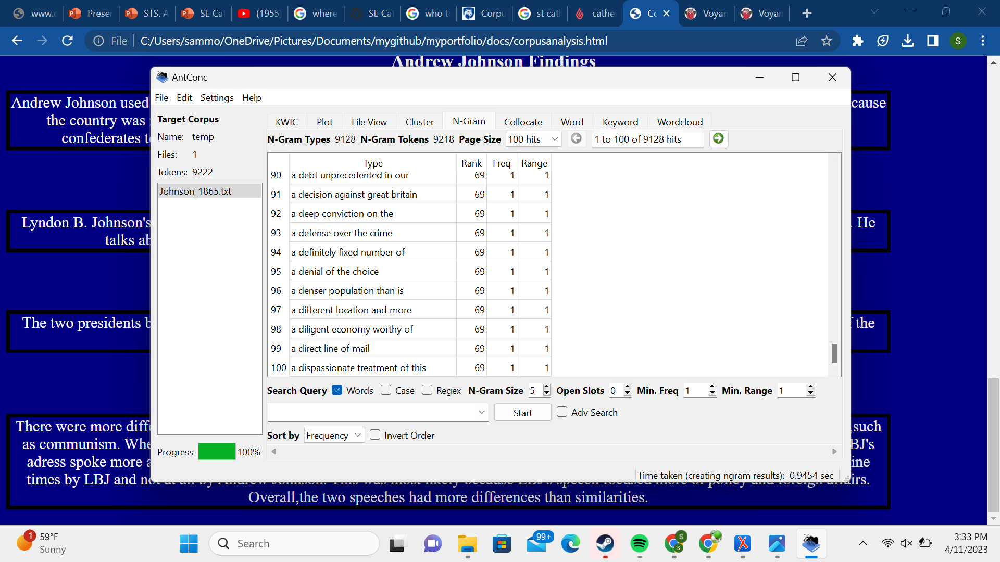
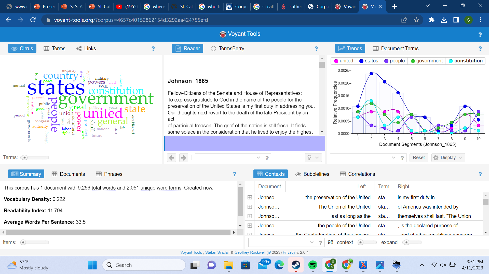
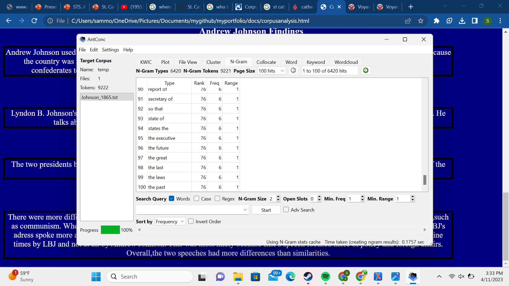
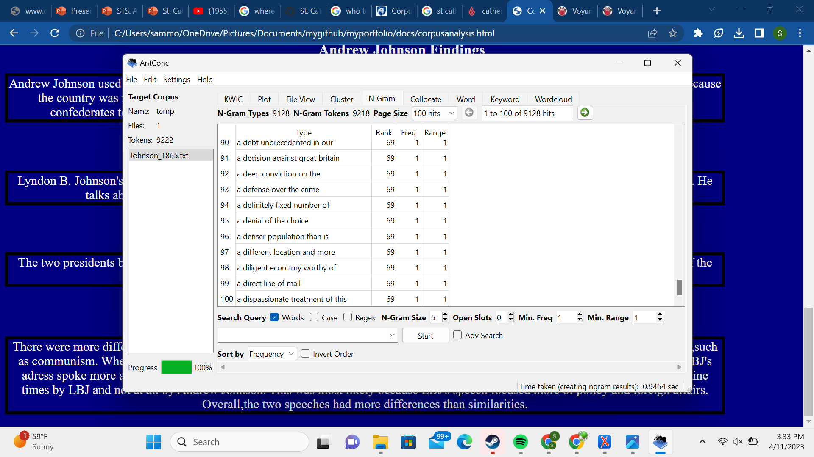


 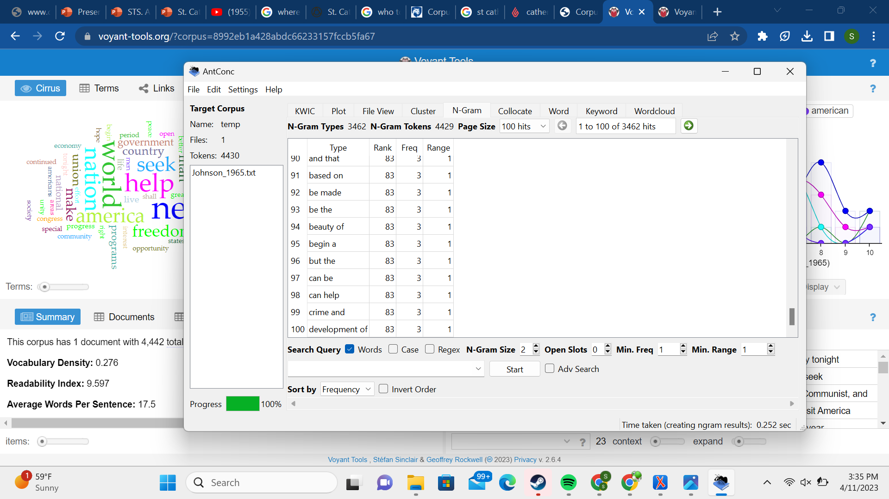
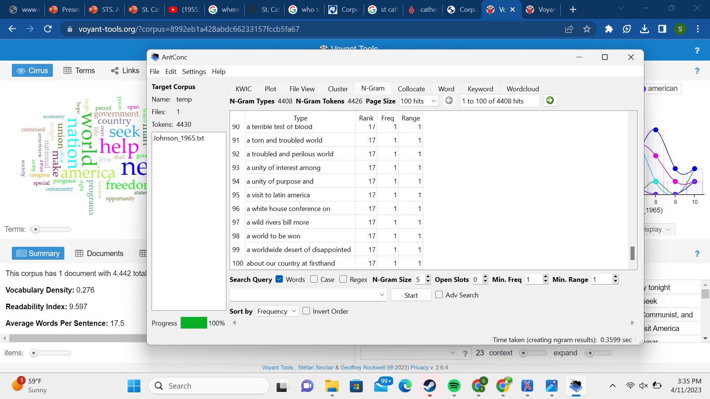
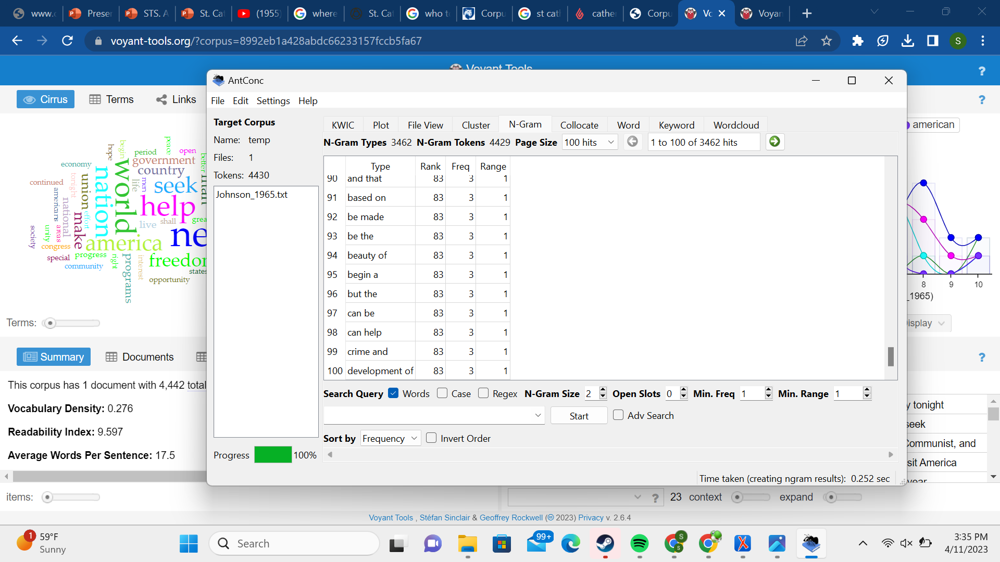
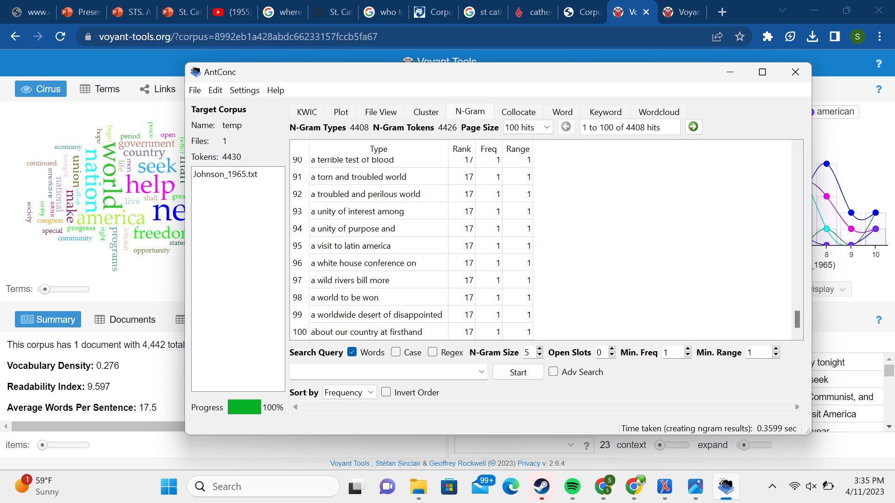
For this corpus analysis,I decided to focus on two State of the Union adresses. The first one is Andrew Johnson's adress which occured only eight months after the assasination of Abraham Lincoln and six months after the trial of Robert E. Lee,who was found guilty of treason. There was still tension in the United States and Johnsons adress reflects that.Lyndon B. Johnson's adress took place after a little over a year after the Kennedy assasination. Although there was still tension from the cold war,LBJ's adress was more hopeful.
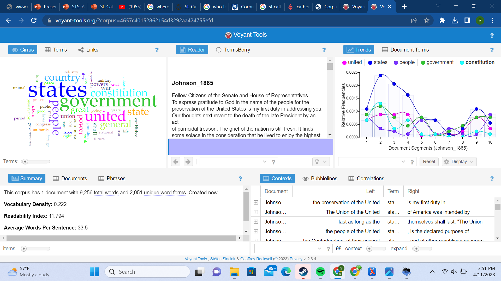
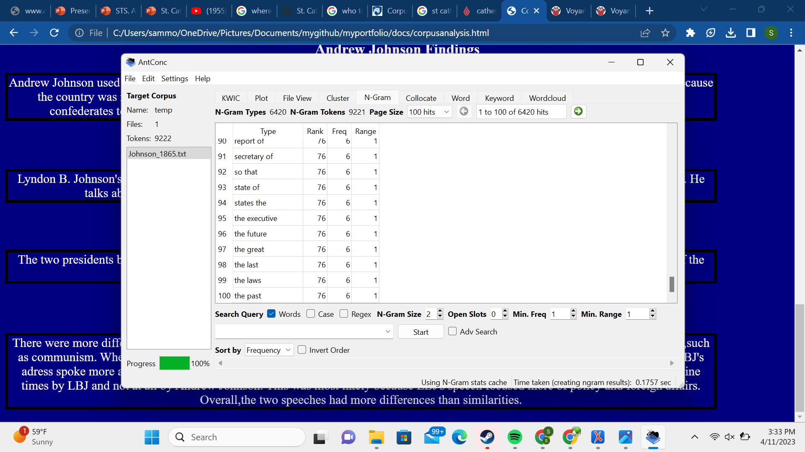
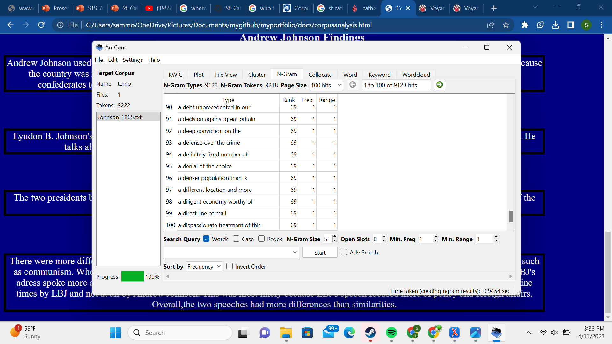
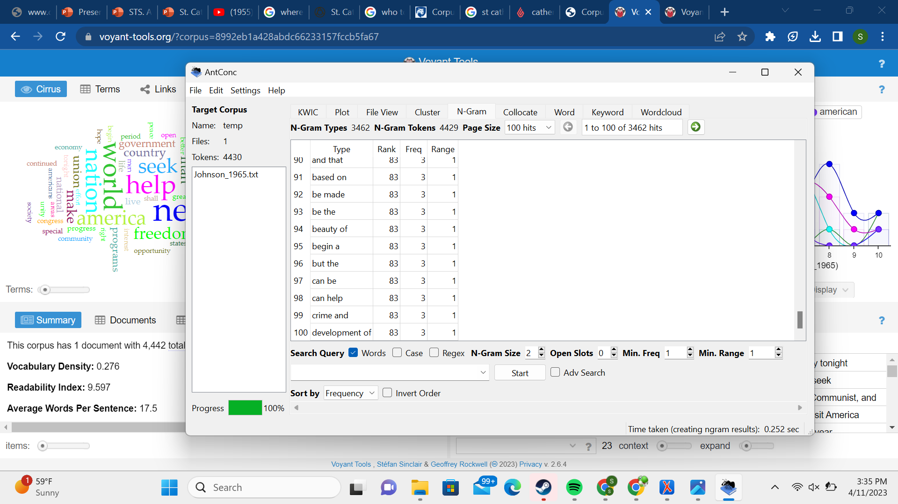
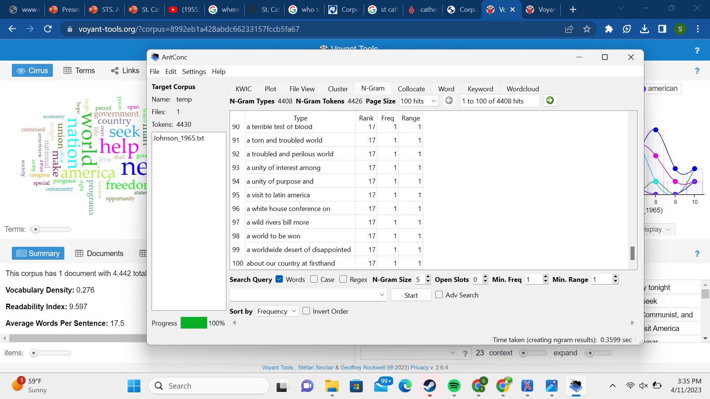
Andrew Johnson used the phrase "constitution" 32 times, "government" 58 times and "united" 44 times.This may have been largely because the country was mainly still in shambles. Although the Union wanted to unify the country, many of its citizens still wanted many confederates to be executed for treason.Johnson supports its citizens while trying to unify them with the confederates again.
Lyndon B. Johnson's speech used terms like "nations" and "programs" more distinctly. He also uses the term "American" more often. He talks about how we should prioritize saftey over freedom. His speech also focused on the threats from abroad.
The two presidents both focus on unity in some aspect. Both adresses condemning an ideology or group of people who at the time of the speech were considered a "threat" to America.
There were more differences than similarities that I found. The first one being that LBJ's speech focused more on threats from abroad,such as communism. Where as Andrew Johnson's speech was more focused on the threats of the confederacy and reuniting the country. Andrew Johnson used more words overall than LBJ. Andrew used 9,256 words while LBJ only used 4,442 words. LBJ's adress also spoke more about American exceptionalism and more hopeful policy to benefit the country.The prase "I propose" was used nine times by LBJ and not at all by Andrew Johnson. This was most likely because LBJ's speech focused more of policy and foreign affairs. Overall,the two speeches had more differences than similarities.